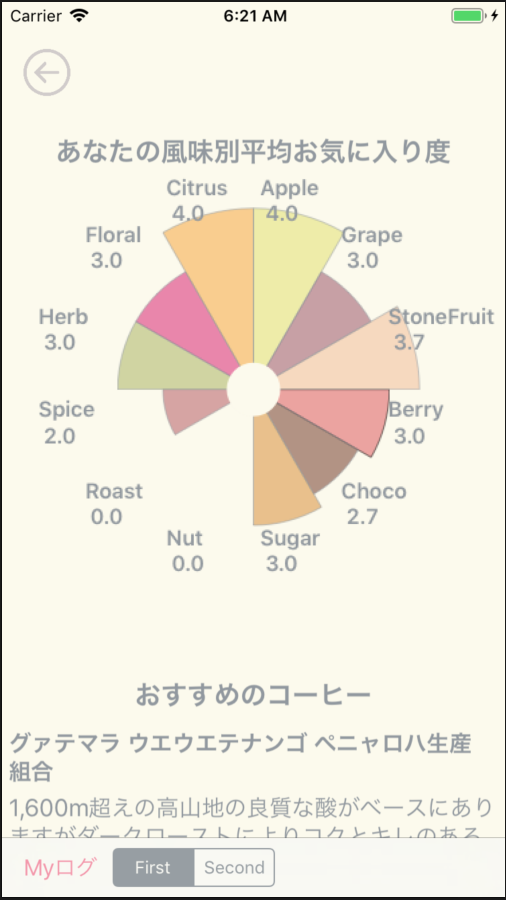

-
Choose Your Favorite Flavor
コンパスの針を回して好みの風味を選択します。
大きな分類から始まり，より具体的な風味を選択していくことで，簡単にお目当の味わいのコーヒーを探すことができます。 -
Flavor Calculator
「コーヒーは好きだけど，いきなり風味で検索は難しい。」そんなときは，Flavor Calculatorを使ってみましょう。
「スタバ＋フルーティー」のように，馴染み深いコーヒーに味わいを足したり引いたりすることで，飲みたい味のコーヒーを手軽に検索できます。 -
Keep A Record
コーヒーを飲んだら，ログを残しましょう。
飲んでみて感じられた風味やお気に入り度を残しておくことで，自分が好きな風味を探していけます。 -
Check Your Records
これまで飲んだコーヒーの味の記録を振り返りましょう。
コーヒーごとの味の記録だけでなく，あなたの風味別のお気に入り度やオススメのコーヒーも知ることができます。あなた専用の，好みのデータベースを作っていきましょう。